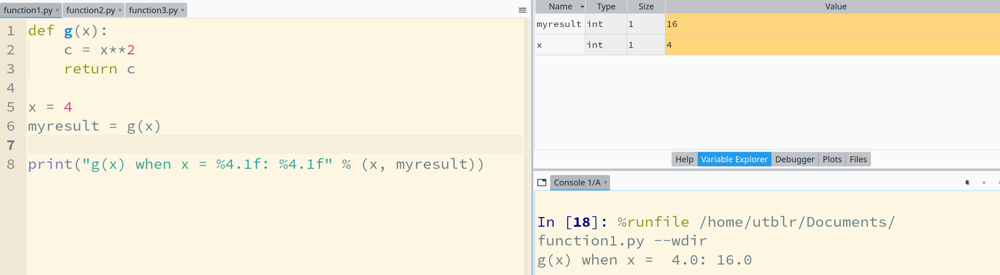
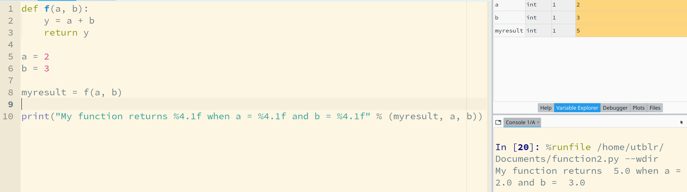
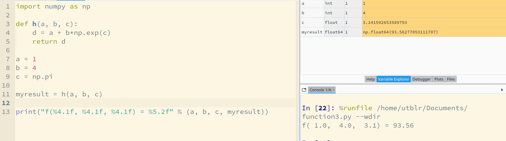
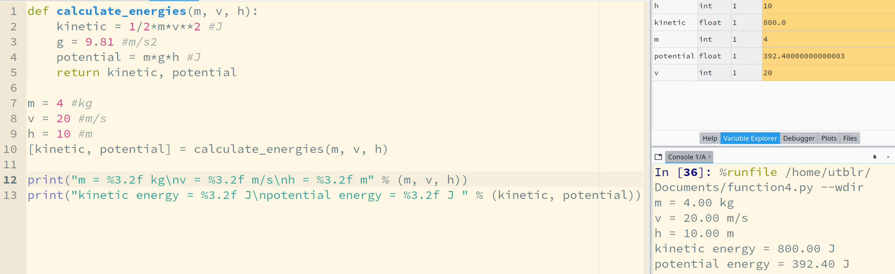
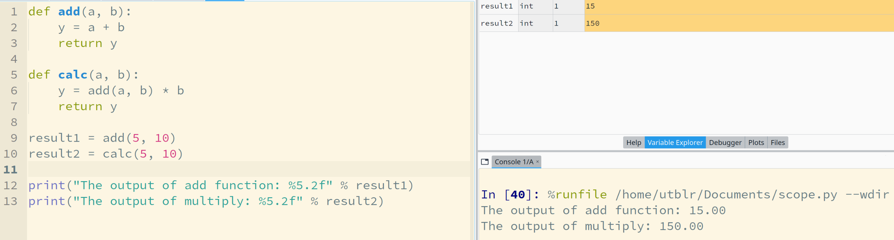

def myfunction(PARAMETERS):
CODE-BLOCK
return VARIABLES
A function does something, and generally returns (brings) a result as the output.
For example, let's define a new function that computes
\[g(x) = x^2\]

For example, let's define a new function that computes
\[f(a, b) = a + b\]

notice the multivariable input!
For example, let's define a new function that computes
\[h(a, b, c) = a + be^c\]

For example, let's define a new function that computes the kinetic, and the potential energy of an object that has a mass (m), velocity (v), and height (h) from a reference point.

notice the multivariable input and output!
Scope is a concept which determines what variables are accesible depending on its region.

Scopes of
are different in this example.
Key takeaways about the previous example: